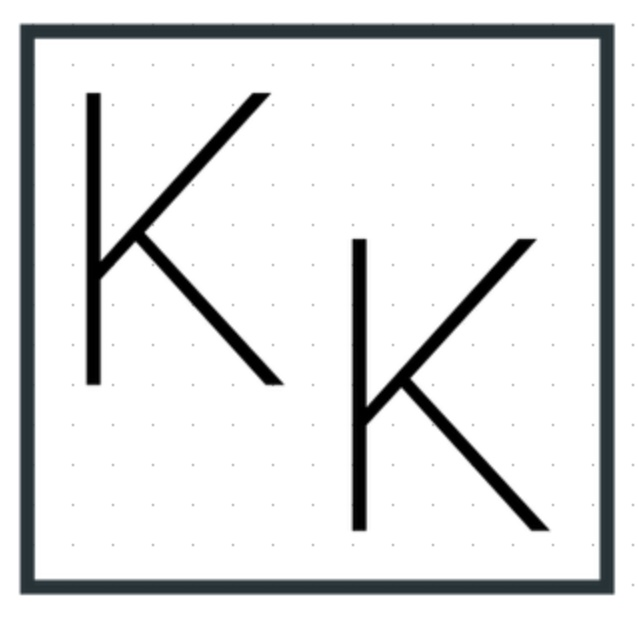

KoffyKraft 👤Your email address (for sign-in only). Your roast records (dates, temperatures, notes). Authentication tokens (stored in your browser).
Your location. Device information. Analytics or tracking. Photos, videos, or audio files. Payment information.
Your roast data is stored in Cloudflare D1. Your authentication token is stored in your browser's localStorage. This is cloud storage for convenience. Not a backup.
Nothing. We do not access, read, analyze, or use your roasts. We do not share data with anyone. We do not sell data. You sign in, your data syncs, we stay out of it.
You are responsible for maintaining your own backups. Export your roastbook monthly to Dropbox, Google Drive, or your computer. Develop a habit of saving to your own device. KoffyKraft is temporary storage, not a permanent archive.
Cloudflare handles security on their end. But no online service is 100% secure. Store important roasts on your own computer as well. This is how you protect your data.
You can export all your data and delete your account anytime. Email info@koffykraft.com for account deletion.
Mailgun: Sends your sign-in code. Gets only your email.
Cloudflare: Hosts everything and stores your roast data.
GitHub: Hosts the code (public). Your data stays private in Cloudflare.
We use these services because we are one person. We cannot run our own servers.
If Cloudflare goes down, your data is down. If Mailgun fails, you cannot sign in. If the internet fails, you cannot sync. This is why you need your own copies.
We will try to tell you. We cannot promise how much notice you will get. Export everything immediately if you see notice. Do not wait.
We may update this policy. Keep your own copies regardless.